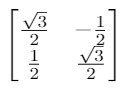

4 Frame vs. Object Rotations
When discussing rotations, it is very important to realize there are two types of rotations: Object rotations and Coordinate frame rotations. So far, we have discussed frame rotations only. However, if you read about rotations or see them
explained other places, it is often not clear what is being rotated, the object or the coordinate frame.
Consider the object shown in Figure 5 (a). This airplane-like object has a point on its nose that is at location (0,2), with the axes defined as shown in the figure. If the airplane itself rotates (an object rotation) by 30° then a Given's
rotation matrix of:

can be used to move the points to the new location. Note that from the "aircraft's" point of view, the point will still be at (0,2), but in a coordinate frame that is observing the aircraft(object), the coordinates will have changed. This
change of coordinates is shown in Figure 5 (b). On the other hand, if the airplane is fixed but the frame that is observing the aircraft changes (once again by 30°) then the inverse of the prior Given's rotation is used to transform the
points:
Whenever a rotation is being applied, it needs to be clear what the rotation is being applied for. This gets even more confusing because, most of the time, a coordinate frame rotation corresponds with an object (a sensor, platform, etc.)
physically rotating. For example, if the aircraft is observing something not attached to the airplane, an airplane rotation of 30 degrees corresponds to a coordinate frame rotation. For the purposes of our explanation of rotations, we
will assume all rotations are coordinate frame rotations. In other words, we assume everything in the world is fixed, but the sensor observing the word is what is rotating.
← Previous
Next Paper→